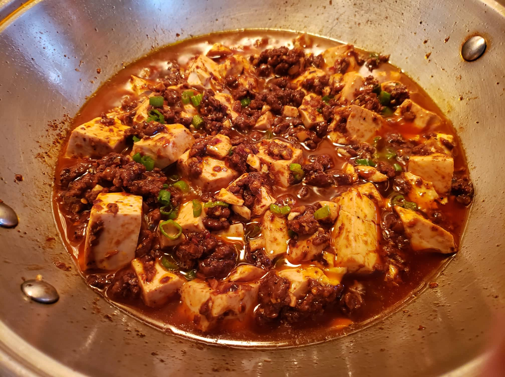

Mapo Tofu

Ingredients:
- 1/4 cup Toasted chili oil
- 1/4 cup Vegetable oil
- Up to 1 1/2 tbsp Ground sichuan peppercorns, or to taste
- 3 tbsp Ginger, minced
- 3 tbsp Garlic, minced
- 1/2 lb Ground pork
- 1-2 tbsp Spicy bean paste
- 2/3 Low sodium chicken broth, or water
- 1 lb Silken tofu, cut into cubes
- 1 1/2 tsp Cornstarch, mixed with 1/4 cup Water
- 1/4 tsp Sesame oil
- 1/4 tsp Brown sugar
- 1 Scallion, finely chopped
Instructions:
- Heat the vegetable oil in your wok over medium heat. Add your ground Sichuan peppercorns and stir occasionally for 30 seconds. Add the ginger. After 1 minute, add the garlic. Fry for another minute.
- Turn up the heat to high and add the ground pork. Break up the meat and fry it until it’s cooked through.
- Add the spicy bean sauce to the mixture and stir it in well. Add the chicken broth to the wok and stir. Let this simmer for about a minute.
- Add the cornstarch mixture to your sauce and stir. Let it bubble away until the sauce starts to thicken.
- Stir the chili oil into the sauce, and add the tofu. Use your spatula to gently toss the tofu in the sauce. Let everything cook for 3-5 minutes. Add the sesame oil and sugar along with the scallions and stir until the scallions are just wilted.